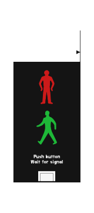
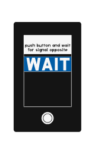
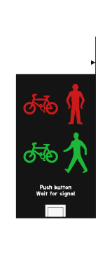

Signs: PedHead
13 items: Drawn 12, Placeholder 1
 4002Nearside pedestrian demand unitPlaceholder
4002Nearside pedestrian demand unitPlaceholder 4002.1Farside pedestrian signalDrawn
4002.1Farside pedestrian signalDrawn 4003Instructions to pedestrians at the push-buttonDrawn
4003Instructions to pedestrians at the push-buttonDrawn
4003.1Nearside pedestrian signalDrawn 4003.2Farside equestrian signalDrawn
4003.2Farside equestrian signalDrawn 4003.3Instructions to horse riders at the push-buttonDrawn
4003.3Instructions to horse riders at the push-buttonDrawn 4003.4Nearside equestrian signalDrawn
4003.4Nearside equestrian signalDrawn 4003.5Farside Toucan signalDrawn
4003.5Farside Toucan signalDrawn
4003.6Instructions at a Toucan crossingDrawn
4003.7Nearside Toucan signalDrawn 4007Belisha beaconDrawn
4007Belisha beaconDrawn BELISHABelisha beacon (pre-2016 id)Drawn
BELISHABelisha beacon (pre-2016 id)Drawn XING_PARBelisha beacon (diagram 4007) at a parallel crossingDrawn
XING_PARBelisha beacon (diagram 4007) at a parallel crossingDrawn